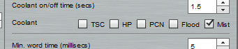
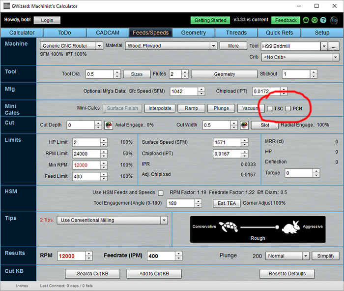

|
|
|
Coolant Options
The way coolant is applied can make a surprising large difference in the Feeds and Speeds that can be used. To understand why, it is important to understand that "cooling" is actually one of the least important functions performed by "coolant." Here are the three functions that coolant performs in order of importance:
1. Chip Clearing: Removing chips from the cut to make it easier to extract newer chips and to avoid recutting old chips is hugely beneficial and is the most important role of the coolant.
2. Lubricant: Some materials such as aluminum have a chemical affinity for the cutter. They can literally weld chips onto the cutting edge, which rapidly dulls the edge (that's what "Built Up Edge" is) and results in a broken cutter. Adding lubricant discourages this tendency.
3. Cooling: Liquids, especially water-soluble coolants, are capable of carrying heat away from the cut much more efficiently than air. Plain water conducts heat 25 times more efficiently than air, for example.
How Does G-Wizard Treat Dry Machining, Mist, and Flood Coolant?
This may come as a surprise to many, but the difference between Mist and Flood Coolant is almost entirely a function of which one will clear the chips better. Let’s do a simple thought experiment. Suppose you have a simple low-performance Flood Coolant system. It’s putting out a slow trickle of Coolant. Maybe you’ve even turned it down so you don’t have to wear a pancho when running the machine because you have no enclosure. Imagine your machine cutting a deep pocket or slot with your trickle of Coolant. The pocket is full of Coolant. There’s no question the cutter is immersed in it. But are the chips being cleared? In a word, “No!” They’re sitting under that pool, and the pool is almost protecting them from removal because the force of the Flood is not strong enough to blast them out of there.
With Dry Coolant, there is still the issue of clearing the chips, but we add to that the lack of lubrication. A good compressed air blast will clear the chips, but it does nothing to prevent chips from welding onto the cutter.
Here's the thing: G-Wizard doesn't try to separate all that. Instead it assumes that at the very least you will ensure chips are adequately cleared and that there is lubrication when materials like aluminum are being cut. For that reason, it doesn't spend a lot of time asking whether you use dry, mist, or flood coolant. It treats them all the same with the assumption you'll make sure whichever system you use gets the chip clearing and lubrication jobs done.
Okay, but isn't Flood Cooling better than Mist?
In the end, it can be, but it is mostly better for surface finish and doesn't affect feeds and speeds much. What really matters is how the flood coolant is applied, and here, premium coolant systems can result in higher feeds and speeds.
Telling G-Wizard What Coolant Systems Your Machine Has
G-Wizard lets you select which coolant systems your CNC machine is equipped with via this menu on the Setup Machine Profile page:

Coolant Options on the Setup Machine Profile page...
The Coolant Options on the Setup Machine Profile page are all about telling G-Wizard what capabilities are available. Here's what the options mean:
- TSC: TSC stands for "Through Spindle Coolant." Click the checkbox if your machine has Through Spindle Coolant capability.
- HP: HP stands for "High Pressure". If you've got a High Pressure coolant system, click the box.
- PCN: PCN stands for "Programmable Coolant Nozzle." Such a system allows the coolant nozzle to be aimed automatically at the best location as the job runs.
- Flood: Click it if your machine has Flood coolant. As discussed, this won't affect your Feeds and Speeds, however.
- Mist: Click it if your machine has Mist coolant. As discussed, this won't affect your Feeds and Speeds, however.
Telling G-Wizard Which Coolant System to Use for Feeds and Speeds Calculations
Once G-Wizard knows from the Machine Profile which Coolant Options are available, it will activate some options on the Feeds and Speeds page:

Coolant Options are located in the Mini-Calc area...
The coolant options are located in the Mini-Calc area on the right. There are only two:
- TSC: Through Spindle Coolant
- PCN: Programmable Coolant Nozzle
Note that G-Wizard will automatically take into account the presence of High Pressure Coolant with these other options. The differences in Feeds and Speeds, especially with High Pressure Through Spindle Coolant, can be quite significant. You'll find out very quickly just what these options are worth in terms of added cost on your machine. Most of the time they're darned well worth the expense.
| Next |